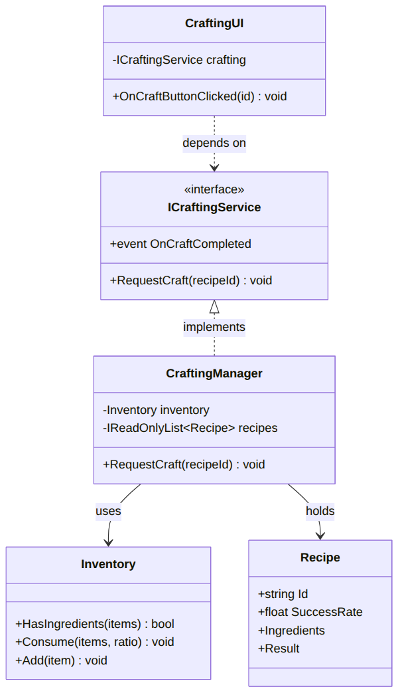

<!DOCTYPE html>
<html lang="ko">
<head>
<meta charset="UTF-8" />
<meta name="viewport" content="width=device-width, initial-scale=1.0" />
<title>레이아웃 쇼케이스 · 유니티 개발자 문서 가이드</title>
<script src="https://unpkg.com/react@18/umd/react.production.min.js"></script>
<script src="https://unpkg.com/react-dom@18/umd/react-dom.production.min.js"></script>
<script src="https://unpkg.com/@babel/standalone/babel.min.js"></script>
<script src="https://cdn.tailwindcss.com"></script>
<style>
  @import url('https://cdn.jsdelivr.net/gh/orioncactus/pretendard@v1.3.9/dist/web/static/pretendard.css');
  :root { --ink:#1f2328; --paper:#ffffff; --teal:#0d9488; --tealSoft:#ccfbf1; --line:#e5e7eb; --slate:#1e293b; }
  * { font-family: 'Pretendard', -apple-system, sans-serif; }
  .mono { font-family: 'JetBrains Mono', 'D2Coding', monospace; }
  /* 슬라이드 프레임: 실제 16:9 비율로 '완성 실물' 느낌 */
  .slide { aspect-ratio: 16/9; border:1px solid var(--line); border-radius:14px; overflow:hidden; box-shadow:0 10px 30px -12px rgba(0,0,0,.18); }
  .tag { font-size:11px; letter-spacing:.08em; text-transform:uppercase; font-weight:700; }
  html { scroll-behavior:smooth; }
</style>
</head>
<body class="bg-slate-50 text-slate-900">
<div id="root"></div>

<script type="text/babel">
const { useState } = React;

// ── 8개 레이아웃 실물 예시 (크래프팅 시스템 콘텐츠) ──

// ① 표지
const Cover = () => (
  <div className="slide bg-gradient-to-br from-white to-teal-50 flex flex-col items-center justify-center text-center px-8">
    <div className="text-4xl font-extrabold tracking-tight text-slate-900">CraftingSystem</div>
    <div className="text-slate-500 mt-1 text-sm">Technical Documentation</div>
    <div className="mt-8 text-xs text-slate-600">김재훈 (Jay) · jay.dev@email.com · GitHub</div>
  </div>
);

// ② 목차
const Agenda = () => (
  <div className="slide bg-white p-8">
    <div className="text-teal-600 tag mb-4">Contents</div>
    <div className="grid grid-cols-2 gap-x-10 gap-y-3 text-slate-800">
      {[['1','개요'],['2','시스템 구조'],['3','핵심 기능'],['4','고민과 선택'],['5','결과·회고']].map(([n,t])=>(
        <div key={n} className="flex items-center gap-3 border-b border-slate-100 pb-2">
          <span className="mono text-teal-500 font-bold">{n}</span><span>{t}</span>
        </div>
      ))}
    </div>
  </div>
);

// ③ 개요 (좌 텍스트 / 우 비주얼)
const Overview = () => (
  <div className="slide bg-white p-8">
    <div className="border-b-2 border-teal-500 inline-block text-xl font-bold pb-1 mb-4">개요</div>
    <div className="grid grid-cols-5 gap-6">
      <div className="col-span-3 space-y-3 text-sm">
        <div><span className="font-bold text-teal-600">What</span> — 재료를 소비해 아이템을 확률 제작</div>
        <div><span className="font-bold text-teal-600">Why</span> — 제작 로직을 UI와 분리, 이벤트로 결과 전파</div>
        <div className="text-slate-500">Unity 2022.3 · C# 10 · 2025.06~07</div>
      </div>
      <div className="col-span-2 bg-slate-100 rounded-lg flex items-center justify-center text-slate-400 text-xs">
        스크린샷 / 마일스톤
      </div>
    </div>
  </div>
);

// ④ 다이어그램 중심 ★
const DiagramCentric = () => (
  <div className="slide bg-white p-6 flex flex-col">
    <div className="text-lg font-bold mb-2">시스템 구조 — 클래스 관계</div>
    <div className="flex-1 flex items-center justify-center min-h-0">
      
    </div>
    <div className="text-center text-xs text-slate-500 mt-2">▸ CraftingUI가 인터페이스에 의존 = 느슨한 결합 (DIP)</div>
  </div>
);

// ⑤ 코드 + 설명 2단
const CodeExplain = () => (
  <div className="slide bg-white p-6">
    <div className="text-lg font-bold mb-3">핵심 기능 — RequestCraft</div>
    <div className="grid grid-cols-2 gap-4 h-[calc(100%-3rem)]">
      <pre className="mono text-[10px] leading-relaxed bg-slate-800 text-slate-100 rounded-lg p-4 overflow-hidden">{`if (!inventory
    .HasIngredients(r.Ingredients))
  return;

var ok = roll() < r.SuccessRate;
inventory.Consume(
  r.Ingredients, ok ? 1f : .5f);
if (ok) inventory.Add(r.Result);`}</pre>
      <ul className="text-sm space-y-2 text-slate-700">
        <li>▸ <b className="text-teal-600">소비 전 검증</b>으로 재료 유실 방지</li>
        <li>▸ <b className="text-teal-600">roll 주입</b>으로 테스트 가능</li>
        <li>▸ 성공/실패 <b className="text-teal-600">소비율 분기</b></li>
      </ul>
    </div>
  </div>
);

// ⑥ 비교 ★
const Comparison = () => (
  <div className="slide bg-white p-6 flex flex-col">
    <div className="text-lg font-bold mb-3">고민과 선택 — 결과 전파 방식</div>
    <div className="grid grid-cols-2 gap-4 flex-1">
      <div className="border border-slate-200 rounded-lg p-4">
        <div className="font-bold mb-2">[A] 직접 참조</div>
        <div className="text-sm text-slate-600 space-y-1"><div>+ 직관적, 추적 쉬움</div><div>− 강한 결합</div></div>
      </div>
      <div className="border-2 border-teal-400 rounded-lg p-4 bg-teal-50/40">
        <div className="font-bold mb-2 text-teal-700">[B] 이벤트</div>
        <div className="text-sm text-slate-600 space-y-1"><div>+ 느슨한 결합, 확장 용이</div><div>− 흐름 추적 ↓</div></div>
      </div>
    </div>
    <div className="text-center text-sm mt-3">▸ <b className="text-teal-600">결정: B</b> — 결과를 쓸 대상(UI·사운드·통계)이 늘어남</div>
  </div>
);

// ⑦ 타임라인/프로세스
const Timeline = () => (
  <div className="slide bg-white p-8 flex flex-col justify-center">
    <div className="text-lg font-bold mb-6">처리 흐름</div>
    <div className="flex items-center justify-between">
      {['요청','검증','판정','결과'].map((s,i)=>(
        <React.Fragment key={s}>
          <div className="flex flex-col items-center">
            <div className="w-12 h-12 rounded-full bg-teal-500 text-white flex items-center justify-center font-bold">{i+1}</div>
            <div className="mt-2 text-sm">{s}</div>
          </div>
          {i<3 && <div className="flex-1 h-0.5 bg-teal-200 mx-2"></div>}
        </React.Fragment>
      ))}
    </div>
  </div>
);

// ⑧ 회고
const Retro = () => (
  <div className="slide bg-white p-8">
    <div className="border-b-2 border-teal-500 inline-block text-xl font-bold pb-1 mb-5">결과 및 배운 점</div>
    <div className="space-y-3 text-sm">
      <div><span className="text-teal-600 font-bold">✓ 달성</span> &nbsp; UI/로직 분리, 확률 경로 테스트 100%</div>
      <div><span className="text-amber-600 font-bold">△ 아쉬움</span> &nbsp; Recipe 하드코딩</div>
      <div><span className="text-slate-500 font-bold">→ 계획</span> &nbsp; ScriptableObject 데이터로 전환</div>
    </div>
  </div>
);

const LAYOUTS = [
  { id:1, name:'표지 (Title)', use:'문서의 첫 장. 프로젝트명이 압도적으로 크게, 요소 최소화·중앙 정렬.', star:false, C:Cover },
  { id:2, name:'목차 (Agenda)', use:'표지 다음 장. 전체 지도를 제공. 번호+짧은 제목, 많으면 2열.', star:false, C:Agenda },
  { id:3, name:'개요 (Overview)', use:'What/Why 요약. 좌 텍스트·우 비주얼 6:4 분할.', star:false, C:Overview },
  { id:4, name:'다이어그램 중심', use:'FSM·클래스·시퀀스가 주인공. 그림 크게, 캡션은 한 줄.', star:true, C:DiagramCentric },
  { id:5, name:'코드 + 설명 2단', use:'핵심 기능. 좌 코드(50줄 이하)·우 "왜" 불릿.', star:false, C:CodeExplain },
  { id:6, name:'비교 (Trade-off)', use:'대안 A vs B 대칭 배치. 하단에 최종 결정 강조.', star:true, C:Comparison },
  { id:7, name:'타임라인/프로세스', use:'개발 과정·처리 순서. 단방향, 단계 3~5개.', star:false, C:Timeline },
  { id:8, name:'회고 (Summary)', use:'결과·아쉬움·계획을 기호(✓ △ →)로 구분.', star:false, C:Retro },
];

const App = () => (
  <div className="max-w-5xl mx-auto px-6 py-12">
    <header className="mb-12">
      <div className="tag text-teal-600 mb-2">Layout Showcase · Part 3</div>
      <h1 className="text-3xl font-extrabold tracking-tight">레이아웃 실물 예시</h1>
      <p className="text-slate-600 mt-3 max-w-2xl">
        Part 3에서 다룬 8가지 레이아웃을 <b>실제 렌더링</b>으로 봅니다.
        ASCII 와이어프레임이 '설계도'라면, 아래는 '완성 실물'입니다.
        모두 관통 예제인 <b className="text-teal-600">크래프팅 시스템</b> 내용으로 채웠습니다.
        <span className="text-teal-600 font-bold"> ★</span>는 다이어그램이 가장 잘 사는 레이아웃.
      </p>
    </header>

    <div className="space-y-16">
      {LAYOUTS.map(({id,name,use,star,C})=>(
        <section key={id} className="scroll-mt-8">
          <div className="flex items-baseline gap-3 mb-4">
            <span className="mono text-2xl font-bold text-teal-500">{String(id).padStart(2,'0')}</span>
            <h2 className="text-xl font-bold">{name}</h2>
            {star && <span className="text-teal-600 font-bold">★</span>}
          </div>
          <p className="text-sm text-slate-600 mb-4">{use}</p>
          <C />
        </section>
      ))}
    </div>

    <footer className="mt-20 pt-8 border-t border-slate-200 text-sm text-slate-500">
      <p>이 페이지는 단일 HTML 파일(React CDN + Tailwind CDN)로 만들어졌습니다.
      브라우저로 바로 열리고, 파일 하나만 올리면 github.io에 배포됩니다.</p>
      <p className="mt-2">더 깊이: 익숙해지면 <span className="mono">npm</span> 기반 정식 React 프로젝트(Vite 등)로
      확장해 보세요 — 그 과정 자체가 좋은 포트폴리오 소재가 됩니다.</p>
    </footer>
  </div>
);

ReactDOM.createRoot(document.getElementById('root')).render(<App />);
</script>
</body>
</html>
